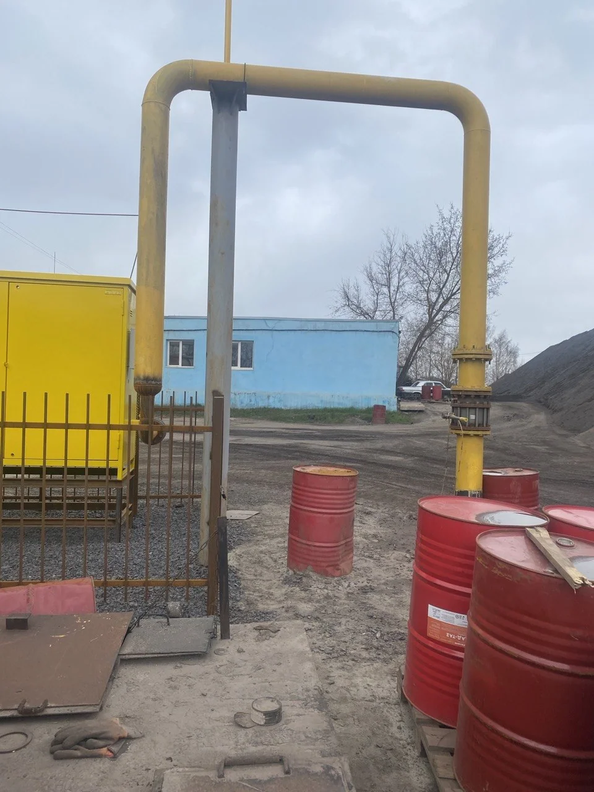
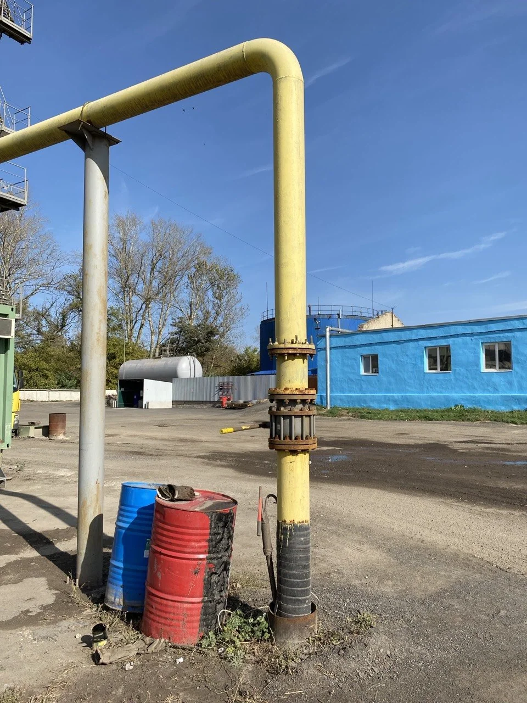
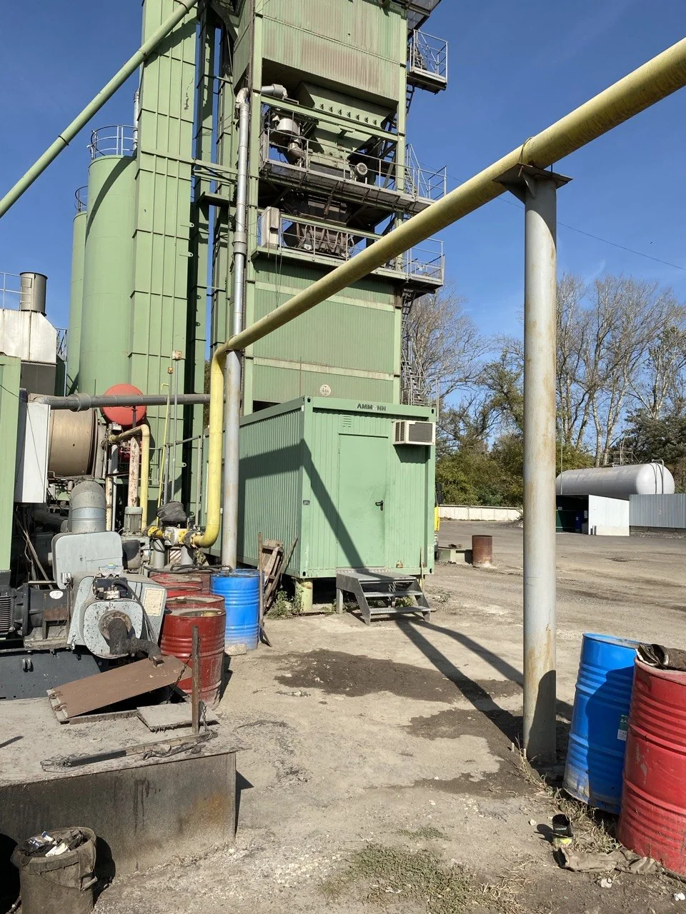
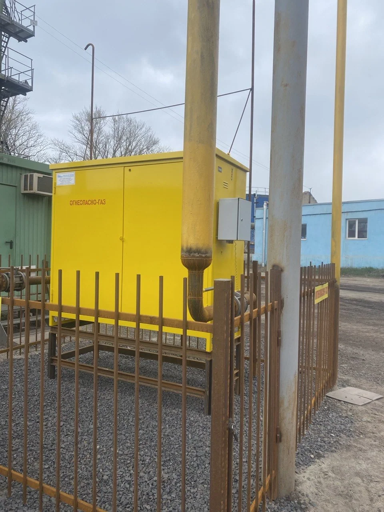
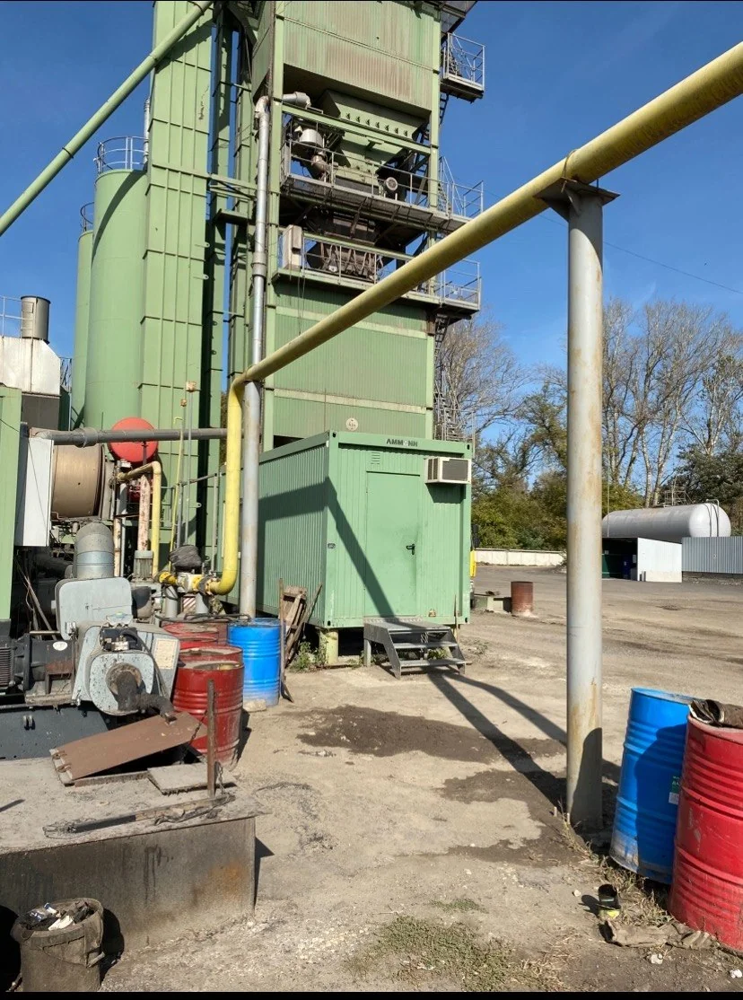
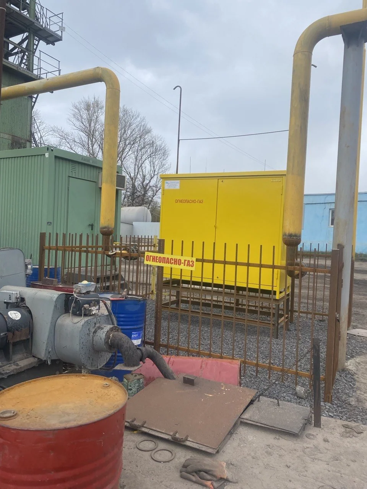

Главная / О компании
КурскГазПром · Курская область
Фотографии на сайте
Здесь собраны фотографии, предоставленные компанией, а также источники иллюстративных изображений, используемых в оформлении сайта.
Обсудить проект →Фотоархив компании
Снимки газопроводов, оборудования и работ
Десять фотографий получены от представителя КурскГазПром. Для публикации технических паспортов объектов и результатов работ потребуется подтвердить дополнительные сведения.

Фланцевый узел надземного газопровода
Фото предоставлено компанией
Газопровод на производственной площадке
Фото предоставлено компанией
Шкафной газорегуляторный пункт
Фото предоставлено компанией
Шкафной газорегуляторный пункт
Фото предоставлено компанией
Газорегуляторная арматура
Фото предоставлено компанией
Инженерные коммуникации на площадке
Фото предоставлено компанией
Газовая инфраструктура предприятия
Фото предоставлено компанией
Работы на частном объекте
Фото предоставлено компанией
Газорегуляторное и измерительное оборудование
Фото предоставлено компаниейОб изображениях на сайте
Фотоархив и визуальные материалы
Фотографии из архива компании показаны выше и в разделе «Наши работы». Изображения жилых домов, чертежей и некоторых других тематических услуг являются иллюстрациями дизайна. Они не обозначают выполненные объекты ООО «КурскГазПром».
Остались вопросы?
Расскажите об объекте. Оставьте контактные данные, и мы свяжемся с вами для уточнения задачи.